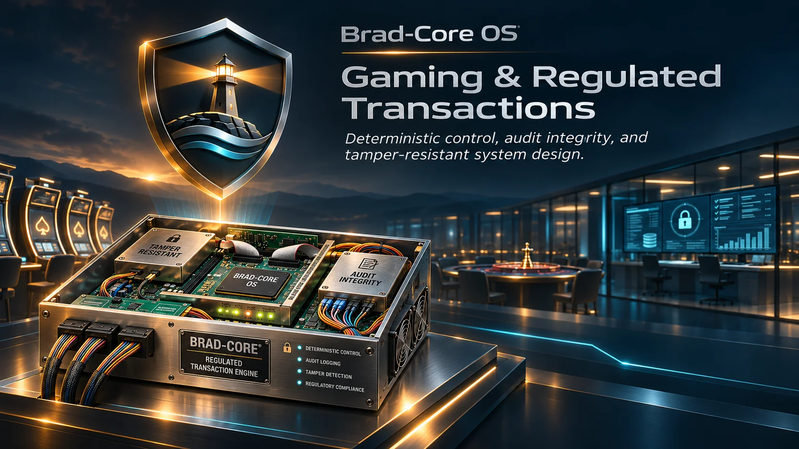

Separated domains
Keep lower-trust game logic apart from transaction-critical operations.

A design concept for keeping transaction records trustworthy when systems fail.
A design concept for keeping transaction records trustworthy when systems fail.
A gaming machine shouldn't lose track of a transaction because its game software crashes. This proposed design separates important records and controls from lower-trust software.
Hardware concept only; no GLI certification or regulated deployment claimed.
Keep lower-trust game logic apart from transaction-critical operations.
Investigate tamper-aware, durable event and transaction histories.
Product-specific certification and regulatory review would be required.
The design needs tests for power loss, errors, tampering, and complete records. Regulatory approval has not been established.
We welcome input from transaction-system engineers and gaming-compliance specialists.
CONNECT WITH BRAD-CORE